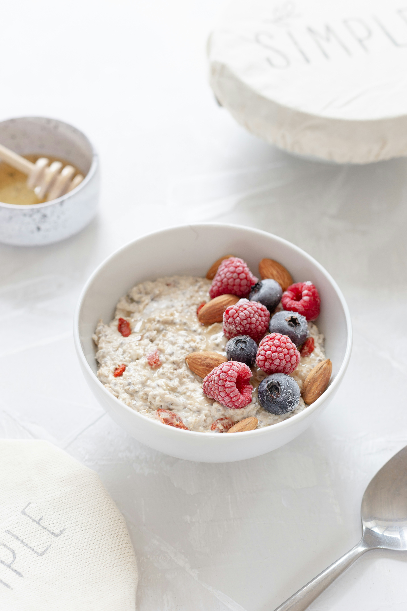

Oatmeal

Home
Description
A warm breakfast food made by boiling crushed, rolled, or cut oat grains in water or milk. People often call it porridge. It is a healthy whole grain full of fiber and nutrients.
Ingredients
- Oats
- Liquid
- Salt
- Sweeteners
- Fruits
- Proteins and Fats
Steps
-
Boil liquid: Bring 1 cup of water or milk to a boil in a small pot with a tiny pinch of salt.
-
Add oats: Stir in ½ cup of rolled oats and reduce the heat to low.
-
Simmer: Cook for 5 to 7 minutes, stirring occasionally, until the liquid absorbs and the oats are creamy.
-
Rest and serve: Remove from heat, let it sit for 1 minute, then add your toppings.